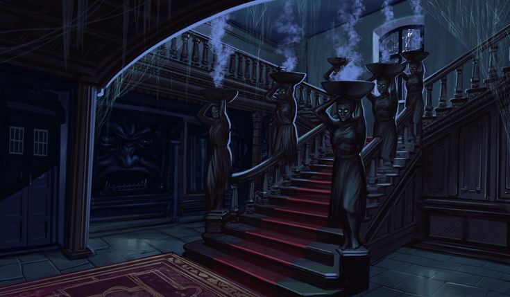

El museo de la ciudad
El Museo Histórico de Halloweentown es un lugar en el que se cuentan muchas de las historias más importantes de nuestra ciudad,
incluyendo nuestro origen
entre algunos de los artículos destacados se encuentran:
El ataúd del primer conde
El primer conde Drácula usaba este ataúd para dormir de día y deambular de noche. Es célebre tanto por su legendario propietario como por las alucinaciones que desencadena —visiones de criaturas terroríficas y futuros catastróficos—, motivo por el cual permanece resguardado en una zona especial del museo lejos de los visitantes.
el amuleto maldito
Esta pieza es en realidad una réplica del amuleto original que perteneció a una antigua entidad pagana llegada a la ciudad. Su energía rivaliza con la del Rey Calabaza y, según se cuenta, otorga un enorme poder a cambio de la cordura de quien lo posee. Como además alimenta la codicia de quienes lo observan, se mantiene a buen resguardo en la mansión del propio Rey Calabaza. Para conocer más sobre la historia de nuestra ciudad, pueden sumarse a las visitas guiadas del museo de Halloweentown.
Visitas guiadas y eventos especiales
El museo da visitas guiadas donde cualquiera puede ir y conocer la historia de Halloweentown y de todos sus objetos célebres.
